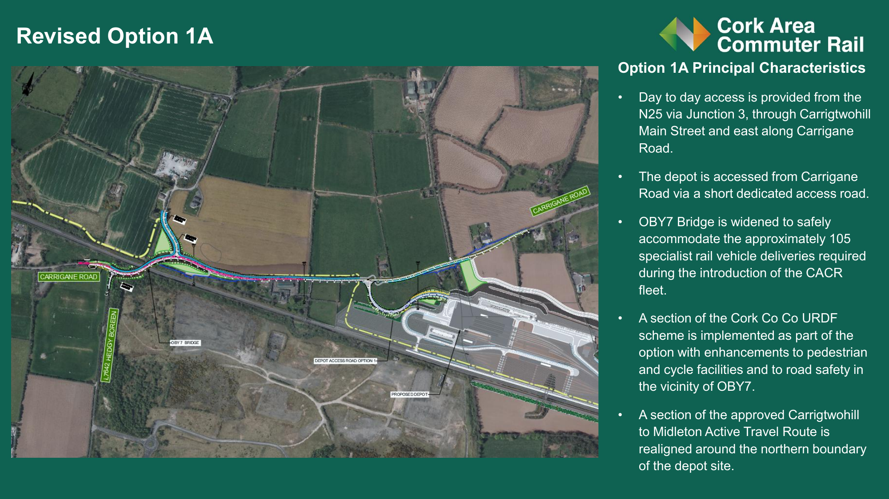
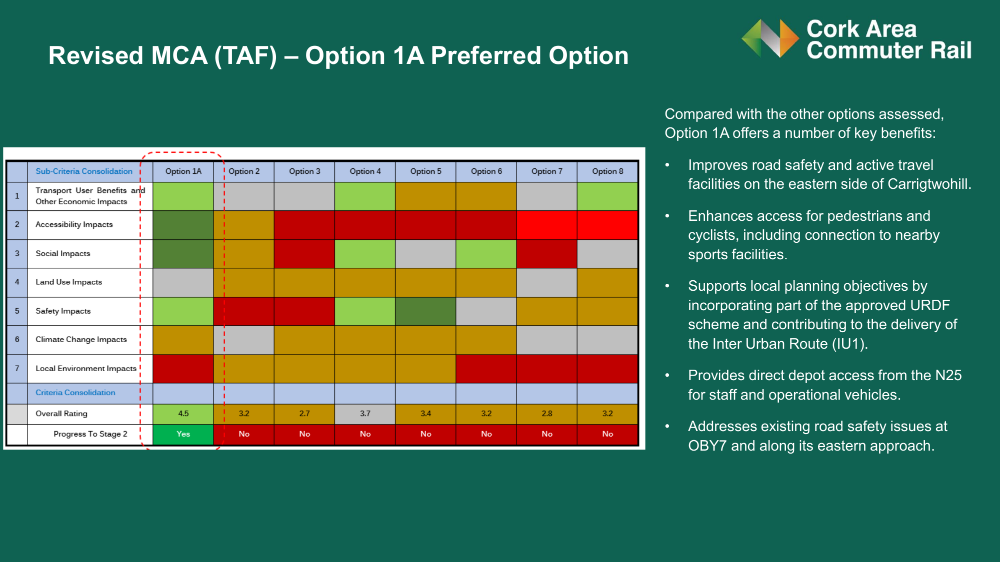

On 19 August 2026 Irish Rail published its Depot Access Road Option Selection report. Option 7 is no longer the preferred route. Revised Option 1A, which approaches the depot from the N25 at Carrigtwohill via Carrigane Road, is now the preferred option and the only one progressing to the next stage.
In May 2026 Option 7 was Irish Rail's Emerging Preferred Option: a two-lane depot access road through residential front gardens, through mature native trees, and along the corridor of Cork County Council's planned inter-urban cycleway. Twelve weeks later it has been set aside. Nobody handed that to us — it was won by hundreds of ordinary people who read a technical report, wrote a submission, knocked on a neighbour's door, or stood at Cotter's Gate on a Thursday evening in June.
Thank you. Every single one of you.
Around 800 emails had reached the project team by 10 June, with more in the final week before the deadline. Irish Rail's own report records that "a large number of petitions were submitted regarding the preferred depot access route." Those submissions are the reason the assessment was reopened.
To the families who came to My Place in Midleton on 27 May, to the online meeting on 10 June, and to the group photo at Cotter's Gate on 11 June — including the children, the dogs and the horse. To everyone who shared the site, printed a flyer, or talked this through over a garden wall. A campaign is just neighbours who decided not to stay quiet.
Every one of these people gave their time, walked the route, and raised it directly with Irish Rail:
Thank you to the Irish Independent, which covered the campaign on 15 June, and to the local and cycling press who took the time to read the evidence rather than the press release. Coverage moved this from a local worry to a public question Irish Rail had to answer.
The ecological survey work that identified five Annex IV bat species and two Red-listed bird species along the corridor. The flood photographs. The people who read the Multi-Criteria Assessment line by line and found that a Highly Negative noise score on nine households had been averaged into invisibility. Evidence is what made the objection impossible to dismiss.
The project team committed in June to reviewing both the assessment process and the route options — and then actually did it. They came back with a different answer. That deserves to be acknowledged. We have always supported the Cork Area Commuter Rail Programme; we opposed one decision within it.
We accepted the disruption of Phase 1 — night works, noise, construction traffic — because we believe in public transport. We only ever opposed one unnecessary decision. It has now been changed, and the trees are still standing.
Irish Rail reopened the depot access road assessment after the PC2 consultation and produced a revised Multi-Criteria Assessment. A new option, Revised Option 1A, was developed and scored highest. It is the only option carried forward to the next stage.
The following is a summary of what the report says about Option 1A. It is set out here for information, so that neighbours can see what has been published — it is not a comment on the merits of the new route. The depot itself brings real impacts for the households closest to it whatever access road is chosen, and we don't underestimate what that means.

Revised Option 1A. Day-to-day access comes from the N25 at Junction 3, through Carrigtwohill Main Street and east along Carrigane Road, with a short dedicated access road into the depot from Carrigane Road.
Day-to-day access — from the N25 via Junction 3, through Carrigtwohill Main Street and east along Carrigane Road, then into the depot by a short dedicated access road.
OBY7 bridge widened — the rail bridge is widened to safely take the approximately 105 specialist rail vehicle deliveries needed to bring the new CACR fleet into service.
Walking and cycling facilities — the report states that part of Cork County Council's approved URDF scheme is built as part of the option, with enhancements to pedestrian and cycle facilities and to road safety in the vicinity of OBY7, and a contribution to the delivery of the Inter Urban Route (IU1).
The Active Travel Route is realigned — a section of the approved Carrigtwohill to Midleton Active Travel Route is realigned around the northern boundary of the depot site.
Construction traffic comes off the N25 — the Ballyadam (Amgen) site is used for construction access directly from the N25.
No residential front gardens on the Option 7 route are taken — the route that would have run through them is no longer the preferred option.
The reversal is stark. In the PC2 report of November 2025, Option 7 scored 4.7 and was recommended as the Emerging Preferred Option, "narrowly" ahead of Option 8. In the revised assessment published in August 2026, Option 7 scores 2.8 — the second-lowest of all options assessed — and Option 1A scores 4.5.
| Option | PC2 score (Nov 2025) | Revised score (Aug 2026) | Progress to Stage 2 |
|---|---|---|---|
| Option 1A (new) — preferred | — (did not exist) | 4.5 | Yes |
| Option 2 | 3.9 | 3.2 | No |
| Option 3 | 3.8 | 2.7 | No |
| Option 4 | 4.1 | 3.7 | No |
| Option 5 | 4.1 | 3.4 | No |
| Option 6 | 4.1 | 3.2 | No |
| Option 7 — formerly preferred | 4.7 (selected) | 2.8 | No |
| Option 8 | 4.7 | 3.2 | No |
PC2 scores from the CACR Phase 2 PC2 Project Report v05 (Figure 12-9). Revised scores from the Depot Access Road Option Selection report, August 2026. Option 1 was superseded by Revised Option 1A and is not scored separately in the revised assessment.

The revised Multi-Criteria Assessment. Option 1A is the only option marked "Yes" for Progress To Stage 2.
The Depot Access Road Overview section of the report sets out, in Irish Rail's own words, what happened after the second round of public consultation:
“Public consultation events were well attended, with strong participation from local communities.”
“Many residents expressed concern that this was the first opportunity they had to review and provide feedback on the depot access route options.”
“A community-led website was established to advocate for changes to the preferred access route (Option 7). A large number of petitions were submitted regarding the preferred depot access route.”
“In response to the feedback received, the project team committed to reviewing both the assessment process and the depot access route options. This review has been progressed.”
The report also lists the additional information that informed the revised options — several of which were raised repeatedly by residents during the consultation:
Updated flood risk information — residents supplied photographic evidence that the Option 7 corridor floods under existing conditions, contradicting its original Neutral flood rating.
Local access road characteristics — the real nature of the narrow residential lanes the road would have used.
Ongoing environmental survey findings — including the ecology work along the corridor.
Confirmation of Water-Rock Level Crossing arrangements.
The opportunity to use the Ballyadam (Amgen) site for construction access directly from the N25.
These are the documents Irish Rail published on 19 August 2026. Everything on this page comes from them.